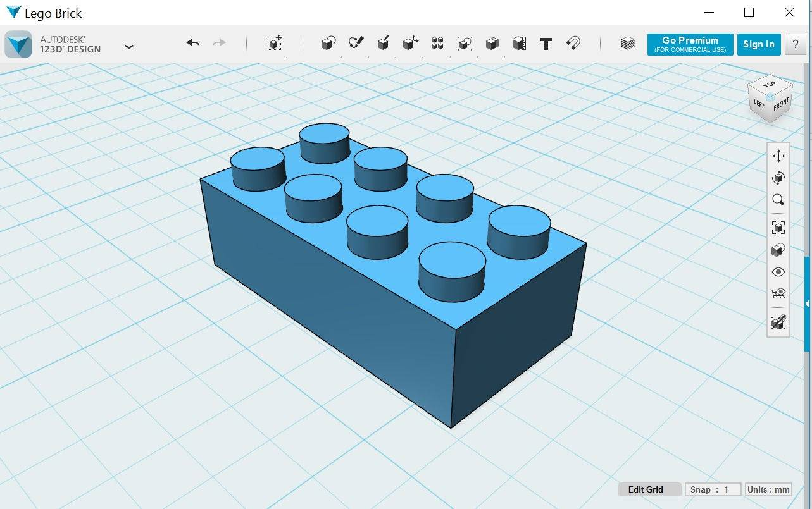

Because of my occupation in a school environment, I have access to the campus licence of the Adobe suite - Photoshop, Illustrator, Indesign, Premiere Pro, Audition. And for many years I have found sufficiency in the suite, without exploring other open-source software. For the purpose of this course, I have explored GIMP and Inkscape.
GIMP, which stands for GNU Image Manipulation Program, is a free and open-source raster graphics editor used for image retouching and editing, free-form drawing, resizing, cropping, photo-montages, converting between different image formats, and more specialized tasks.
With my experince in using Adobe Photoshop, I was able to explore the various icons and menu selections and quickly understand their functions. With the help of an online tutorial, I was able to convert a bitmap image to a vector image quickly. I tested by creating a post card for Lunar New Year using GIMP and Inkscape.
Inkscape is a free and open-source vector graphics editor; it can be used to create or edit vector graphics such as illustrations, diagrams, line arts, charts, logos and complex paintings. Inkscape's primary vector graphics format is Scalable Vector Graphics (SVG).
I was quite impressed by the vectorized result of my test sketch.
Surprisingly, inkscape does not have a Crop tool, which is such a common standard tool. And so, cropping an image takes a few more steps to complete.
In my line of work, I do not need to have a hands-on understanding of 3D CAD software, so this week's requirement is quite an uphill task for me. I explored Autodesk Inventor, 123D Design, Sketchup, Tinkercad but realized that seemed too ambitious, and I got confused by the different software. So I narrowed down to Inventor and 123D Design, which I think would be most helpful to my course of study.
Autodesk Inventor is a CAD application for creating 3D digital prototypes used in the design, visualization and simulation of products. It is available free for download to educators and students, and the free licence lasts 3 years. It is a very powerful software if we are able to harness all the capabilities it offers.
I have not used this software before. But thanks to Singapore Polytechnic being a premium member of Lynda.com, I was able to have unlimited access to many online tutorial courses. I find that to be better than reading reference books. And Inventor is NOT a software that can be learned by exploring the interface alone. User needs to be familiar with basic 3D terminology and characteristics. I practiced some hands-on with something simple, such as a Lego brick and below are some screenshots of the results. Because Inventor is a very powerful tool, it is my software of choice.
Autodesk 123D is a suite of hobbyist CAD and 3D modelling tools created by Autodesk. 123D is linked to a community of makers online where we can draw inspirations and learn from one another. It is easier for beginners compared to Inventor as instead of using 3-dimensional planes, it uses other primitive blocks to act as plane and axis. However, I don't think 123D has the functional capability to generate drawing view. So I had to import to Inventor to do that.

Using Inkscape and Autodesk Inventor, I created the 2D vector and 3D model of two of the proposed final project listed in my final project proposal.